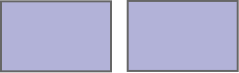
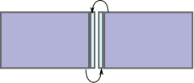
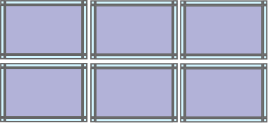

Overlapping Computations¶
Some array operations require communication of borders between neighboring blocks. Example operations include the following:
Convolve a filter across an image
Sliding sum/mean/max, …
Search for image motifs like a Gaussian blob that might span the border of a block
Evaluate a partial derivative
Play the game of Life
Dask Array supports these operations by creating a new array where each block is slightly expanded by the borders of its neighbors. This costs an excess copy and the communication of many small chunks, but allows localized functions to evaluate in an embarrassingly parallel manner.
The main API for these computations is the map_overlap method defined
below:
|
Map a function over blocks of the array with some overlap |
-
dask.array.map_overlap(x, func, depth, boundary=None, trim=True, **kwargs)¶ Map a function over blocks of the array with some overlap
We share neighboring zones between blocks of the array, then map a function, then trim away the neighboring strips.
- Parameters
- func: function
The function to apply to each extended block
- depth: int, tuple, or dict
The number of elements that each block should share with its neighbors If a tuple or dict then this can be different per axis. Asymmetric depths may be specified using a dict value of (-/+) tuples. Note that asymmetric depths are currently only supported when
boundaryis ‘none’.- boundary: str, tuple, dict
How to handle the boundaries. Values include ‘reflect’, ‘periodic’, ‘nearest’, ‘none’, or any constant value like 0 or np.nan
- trim: bool
Whether or not to trim
depthelements from each block after calling the map function. Set this to False if your mapping function already does this for you- **kwargs:
Other keyword arguments valid in
map_blocks
Examples
>>> import numpy as np >>> import dask.array as da
>>> x = np.array([1, 1, 2, 3, 3, 3, 2, 1, 1]) >>> x = da.from_array(x, chunks=5) >>> def derivative(x): ... return x - np.roll(x, 1)
>>> y = x.map_overlap(derivative, depth=1, boundary=0) >>> y.compute() array([ 1, 0, 1, 1, 0, 0, -1, -1, 0])
>>> x = np.arange(16).reshape((4, 4)) >>> d = da.from_array(x, chunks=(2, 2)) >>> d.map_overlap(lambda x: x + x.size, depth=1).compute() array([[16, 17, 18, 19], [20, 21, 22, 23], [24, 25, 26, 27], [28, 29, 30, 31]])
>>> func = lambda x: x + x.size >>> depth = {0: 1, 1: 1} >>> boundary = {0: 'reflect', 1: 'none'} >>> d.map_overlap(func, depth, boundary).compute() array([[12, 13, 14, 15], [16, 17, 18, 19], [20, 21, 22, 23], [24, 25, 26, 27]])
Explanation¶
Consider two neighboring blocks in a Dask array:
{kind=link}
We extend each block by trading thin nearby slices between arrays:
{kind=link}
We do this in all directions, including also diagonal interactions with the overlap function:
{kind=link}
>>> import dask.array as da
>>> import numpy as np
>>> x = np.arange(64).reshape((8, 8))
>>> d = da.from_array(x, chunks=(4, 4))
>>> d.chunks
((4, 4), (4, 4))
>>> g = da.overlap.overlap(d, depth={0: 2, 1: 1},
... boundary={0: 100, 1: 'reflect'})
>>> g.chunks
((8, 8), (6, 6))
>>> np.array(g)
array([[100, 100, 100, 100, 100, 100, 100, 100, 100, 100, 100, 100],
[100, 100, 100, 100, 100, 100, 100, 100, 100, 100, 100, 100],
[ 0, 0, 1, 2, 3, 4, 3, 4, 5, 6, 7, 7],
[ 8, 8, 9, 10, 11, 12, 11, 12, 13, 14, 15, 15],
[ 16, 16, 17, 18, 19, 20, 19, 20, 21, 22, 23, 23],
[ 24, 24, 25, 26, 27, 28, 27, 28, 29, 30, 31, 31],
[ 32, 32, 33, 34, 35, 36, 35, 36, 37, 38, 39, 39],
[ 40, 40, 41, 42, 43, 44, 43, 44, 45, 46, 47, 47],
[ 16, 16, 17, 18, 19, 20, 19, 20, 21, 22, 23, 23],
[ 24, 24, 25, 26, 27, 28, 27, 28, 29, 30, 31, 31],
[ 32, 32, 33, 34, 35, 36, 35, 36, 37, 38, 39, 39],
[ 40, 40, 41, 42, 43, 44, 43, 44, 45, 46, 47, 47],
[ 48, 48, 49, 50, 51, 52, 51, 52, 53, 54, 55, 55],
[ 56, 56, 57, 58, 59, 60, 59, 60, 61, 62, 63, 63],
[100, 100, 100, 100, 100, 100, 100, 100, 100, 100, 100, 100],
[100, 100, 100, 100, 100, 100, 100, 100, 100, 100, 100, 100]])
Boundaries¶
With respect to overlapping, you can specify how to handle the boundaries. Current policies include the following:
periodic- wrap borders around to the other sidereflect- reflect each border outwardsany-constant- pad the border with this value
An example boundary kind argument might look like the following:
{0: 'periodic',
1: 'reflect',
2: np.nan}
Alternatively, you can use dask.array.pad() for other types of
paddings.
Map a function across blocks¶
Overlapping goes hand-in-hand with mapping a function across blocks. This function can now use the additional information copied over from the neighbors that is not stored locally in each block:
>>> from scipy.ndimage.filters import gaussian_filter
>>> def func(block):
... return gaussian_filter(block, sigma=1)
>>> filt = g.map_blocks(func)
While in this case we used a SciPy function, any arbitrary function could have been used instead. This is a good interaction point with Numba.
If your function does not preserve the shape of the block, then you will need to
provide a chunks keyword argument. If your block size is regular, then this
argument can take a block shape of, for example, (1000, 1000). In case of
irregular block sizes, it must be a tuple with the full chunks shape like
((1000, 700, 1000), (200, 300)).
>>> g.map_blocks(myfunc, chunks=(5, 5))
If your function needs to know the location of the block on which it operates,
you can give your function a keyword argument block_id:
def func(block, block_id=None):
...
This extra keyword argument will be given a tuple that provides the block
location like (0, 0) for the upper-left block or (0, 1) for the block
just to the right of that block.
Trim Excess¶
After mapping a blocked function, you may want to trim off the borders from each
block by the same amount by which they were expanded. The function
trim_internal is useful here and takes the same depth argument
given to overlap:
>>> x.chunks
((10, 10, 10, 10), (10, 10, 10, 10))
>>> y = da.overlap.trim_internal(x, {0: 2, 1: 1})
>>> y.chunks
((6, 6, 6, 6), (8, 8, 8, 8))
Full Workflow¶
And so, a pretty typical overlapping workflow includes overlap, map_blocks
and trim_internal:
>>> x = ...
>>> g = da.overlap.overlap(x, depth={0: 2, 1: 2},
... boundary={0: 'periodic', 1: 'periodic'})
>>> g2 = g.map_blocks(myfunc)
>>> result = da.overlap.trim_internal(g2, {0: 2, 1: 2})